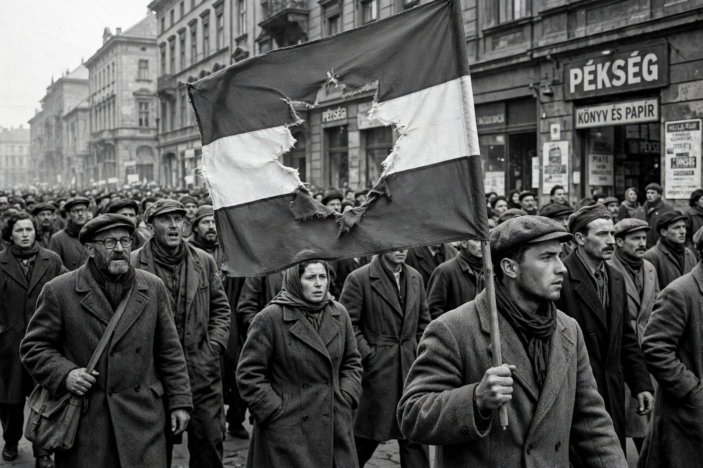

Wikipedia > Hungarian Revolution of 1956
Hungarian Revolution of 1956

The Hungarian Revolution of 1956 (23 October – 10 November 1956) was a nationwide revolt against the Hungarian People's Republic and its Soviet-imposed policies. It began as a student demonstration in Budapest and grew into an uprising that temporarily overthrew the government, before being crushed by a massive Soviet military intervention.
Background
After 1949 Hungary was ruled by the Stalinist regime of Mátyás Rákosi, marked by purges, show trials and a feared secret police, the ÁVH. Nikita Khrushchev's "Secret Speech" of February 1956 and unrest in Poland encouraged Hungarian reformers. The reform communist Imre Nagy, who had been removed as prime minister in 1955, became a focus of hopes for change.
The uprising
On 23 October 1956 students marched in Budapest demanding free elections, freedom of the press and the withdrawal of Soviet troops; a huge statue of Stalin was toppled. When ÁVH officers fired on demonstrators outside the radio building, the protest became an armed revolt. Workers' councils and revolutionary committees sprang up across the country, and the Hungarian army largely stood aside or joined the rebels. Nagy returned as prime minister, formed a multi-party government, announced Hungary's withdrawal from the Warsaw Pact and declared neutrality on 1 November, appealing to the United Nations.
Soviet intervention
On 4 November the USSR launched Operation Whirlwind, a large-scale invasion involving some 31,000 troops and more than 1,100 tanks. Fierce fighting, especially in Budapest's working-class districts, continued for about a week. Roughly 2,500 Hungarians and 700 Soviet troops were killed. Nagy took refuge in the Yugoslav embassy; after leaving under a promise of safe passage he was arrested, later tried in secret and executed in June 1958.
Aftermath
Some 200,000 Hungarians fled the country, mostly through Austria. Thousands were imprisoned or executed in reprisals. János Kádár, installed by Moscow, consolidated power and later moderated the regime into what became known as "goulash communism". The Western powers, despite rhetoric about liberation, did not intervene militarily, a fact often linked to the simultaneous Suez Crisis. The revolution remains a foundational event in modern Hungarian national memory; 23 October is a national holiday.
See also: Warsaw Pact invasion of Czechoslovakia · Imre Nagy · Poznań 1956 protests